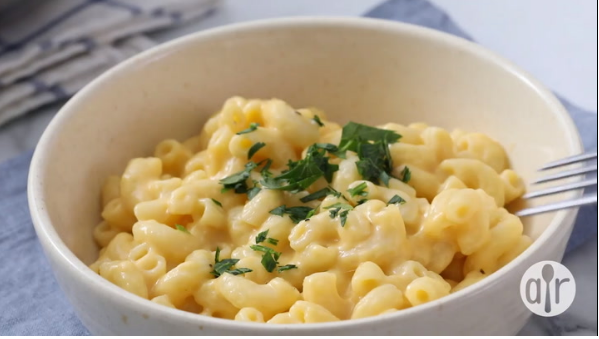

Mac N' Cheese

Ingredients
- 1 box of macaroni (8 ounces)
- 1/4 cup of butter
- 1/4 cup of all-purpose flour
- 1/2 teaspoon salt
- ground black pepper (to taste)
- 2 cups milk
- 2 cups shredded cheddar cheese
Steps
- Bring a large pot of lightly salted water to a boil.
Cook elbow macaroni in the boiling water, stirring occasionally until cooked through but firm to the bite
8 minutes.
- At the same time, melt butter in a sauce pan over medium heat.
- Add flour, salt, and pepper and stir until smooth, about 5 minutes
- Pour in milk slowly, while stirring continuously. Continue to cook and stir until mixture is smooth and bubbling
about 5 minutes, making sure the milk doesn't burn.
- Add cheese and stir until melted, 2 to 4 minutes
- Drain macaroni and fold into cheese sauce until coated
- Serve hot and enjoy!